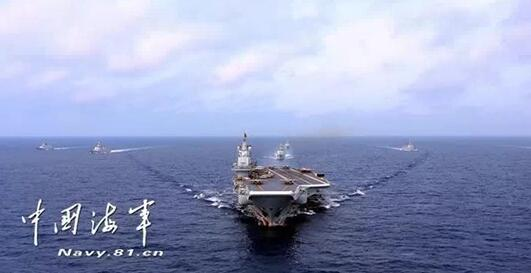

台媒称，大陆第二艘国产航母会在上述船坞建造，准备工作正在加速进行中。据报道，2013年3月，上述船坞使用的还只是单边龙门起重机，同年8月底，长160米的龙门滑动式起重机的安装已经完毕。
报道表示，航母分段船体组装工程的准备工作已经就绪。
另据报道，大连造船厂已经完成大陆第一艘国产航母的钢板切割，目前正在室内进行分段建造之中，稍后将分段运送到露天船台上进行组装，过程中需要巨大的龙门吊车。
大连造船厂一共拥有3台大型吊车，最大为900吨，其次为600吨、580吨，前者为亚洲最大。报道表示，龙门吊车是可以移动的，建造6万吨级的航母必须安装大型龙门吊车。任何国家的航母建造船坞都是如此，而且吨位越大越好
